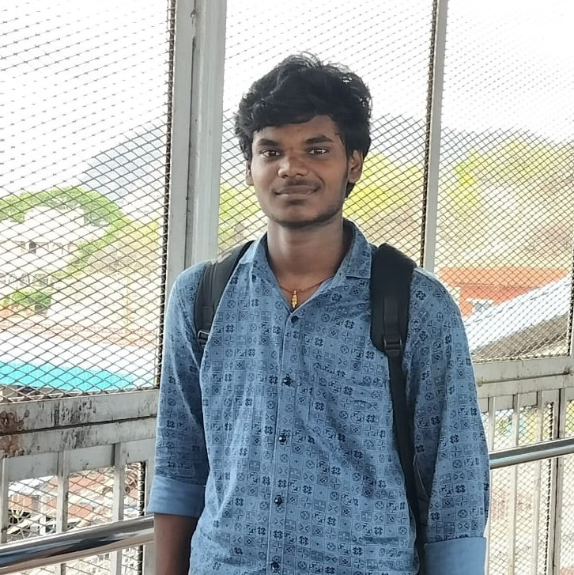

Hello! Akana Nitish Sai, I am pursuing B.Tech in Computer Science and Artificial Intelligence.I enjoy learning new concepts, improving my problem-solving skills, and exploring areas such as web development, and data structures. I am eager to gain practical experience through internships and real-world projects while continuously expanding my technical knowledge.
B.Tech
Computer Science and Artificial Intelligence
Email:nitish.akana24@sasi.ac.in
Linkedin:Nitish Akana
Phone: 9989117118
To improve my technical skills, gain knowledge, and build a successful career in the software industry.